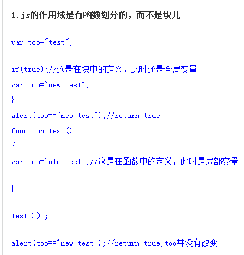
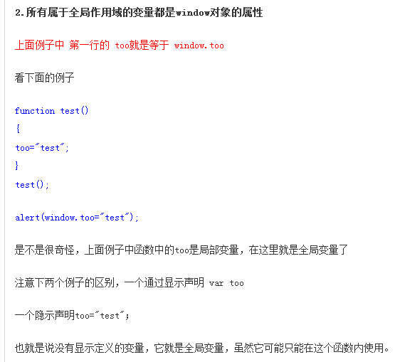
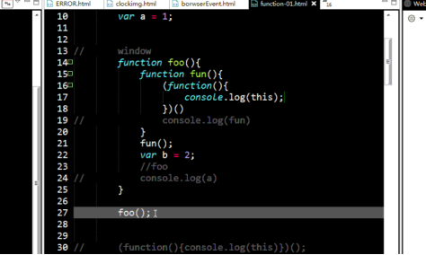
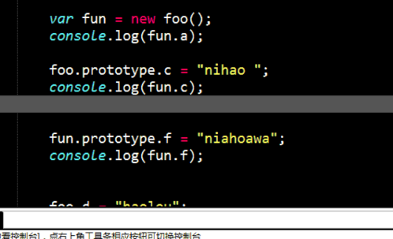
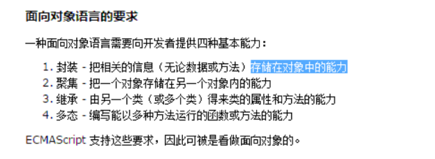
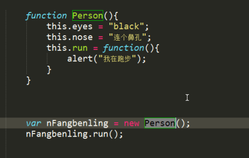
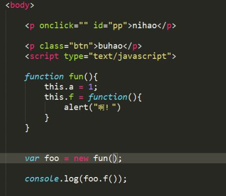

栈内存 堆内存 常亮池
//说实话这对鬼东西不是很懂
JS编译运行机制 引擎 语法解释器
JS直译的脚本语言 运行在依靠其他环境
HS垃圾清除机制；市面浏览器标记清除 IE浏览器应用技术 （比如延时器）
函数声明式声明无法清除，等待垃圾回收机制清除。
var fun = function (){}可以手动清除
作用域 局部 全局 函数块级作用域
 
闭包
this是 执行时的环境，而不是声明时的环境
 
面对对象语句的要求

其中举栗子多态和继承  